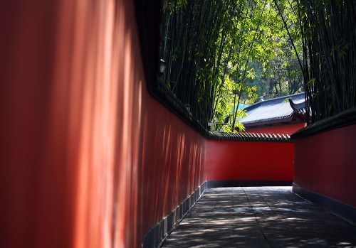

图片：高德地图 POI10.01｜先到的人入住成都东
龙之梦瑞峰公寓酒店（成都东站店）· 不安排集体景点
抵达后
龙之梦瑞峰公寓酒店（成都东站店）
地址嘉陵江路 8 号，五桂桥，高德坐标对应成都东站步行圈。先到的朋友直接入住，不在车站互等，也不安排集体景点。
傍晚
酒店或成都东站商圈用餐
只解决当天晚饭和补给。身份证、充电宝和次日草堂门票截图放在随身包，行李箱留在房间。
今晚住谁
- 只覆盖 10 月 1 日已经到成都的人。
- 还在路上的人不用为了这晚改签。
和车站的关系
- 酒店在嘉陵江路，进站前仍要确认走东广场还是西广场。
- 10 月 3 日退房后行李可先放前台，下午再取。